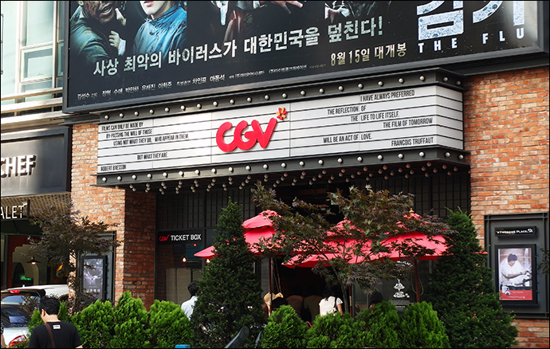
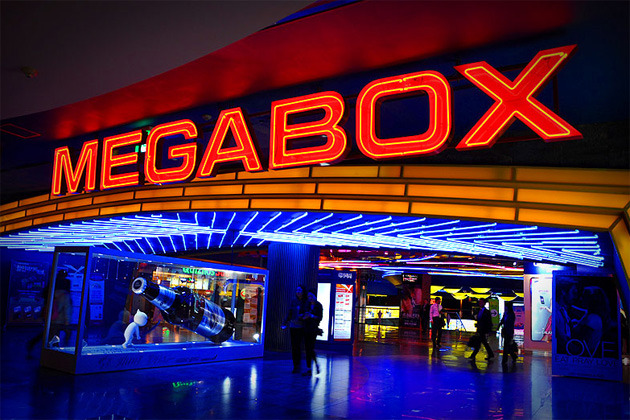
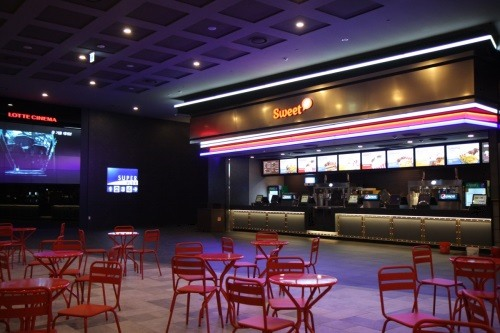

CJ CGV는 대한민국에서 멀티플렉스 영화관을 운영하는 CJ그룹의 엔터테인먼트 및 미디어 부문 계열사입니다. 1996년에 대한민국의 CJ그룹과 홍콩의 영화사 골든 하베스트(Golden Harvest), 오스트레일리아의 빌리지 로드쇼(Village Roadshow)가 합작하여 설립한 회사로, 당시 참여한 3개 회사의 첫 알파벳을 따서 ‘CGV’라 명명하였으나, 지금은 골든 하베스트와 빌리지 로드쇼가 이탈하여 CJ그룹만이 독자 경영하고 있습니다. 두 회사가 손을 뗀 이후부터는 ‘Cultural Great Vital’의 약자로 사용하고 있다. 2012년 2월 기준, 국내에 85개의 영화관, 681개의 스크린, 약 11만석의 객석을 보유하고 있습니다. 자회사로 프리머스를 두고 있으며, 일부 프리머스 점포가 CJ CGV 점포로 전환되었습니다. 서울에 본사를 두고 있으며 부산에는 8개의 영화관이 있습니다. 4DX, CIne de Chef, IMAX 등의 특별관이 있습니다.

국내 대표적인 멀티플렉스 브랜드 중 하나인 메가박스에서 운영하는 부산 지점인 메가박스 부산 극장은 1934년에 개관한 부산 극장의 이름 및 역사를 계승해 오고 있으며, BIFF 거리의 중심 극장이자 ‘17m X 7.5m’ 대형 스크린을 제공하고 있다. 8개관에 2,441석의 규모를 가지고 있습니다. 2001년에 메가박스 서면이 6개관으로 개관한 이후로 4군데의 점포, 즉 메가박스 해운대·메가박스 오투·메가박스 부산 극장·메가박스 장산 등이 순차로 개관하여 총 5개의 영화관이 개관하였습니다. 초대형 스크린과 Atmos 사운드가 설치된 M2관을 가지고 있습니다.

롯데 시네마(Lotte Cinema)는 대한민국의 대표적인 멀티플렉스 영화관이자 부산의 대표적인 멀티플렉스 영화관입니다. 1999년 10월에 롯데 시네마 일산, 2000년에 롯데 시네마 대전을 시작으로 전국적으로 체인망을 구축하였는데, 롯데 시네마 부산 본점은 2001년 6월에 개관하였습니다. 한국 최초로 6P레이저영사기가 도입됐습니다. 또한 월드타워 롯데시네마에는 전 세계에서 가장 큰 스크린이 들어오기도 했습니다.